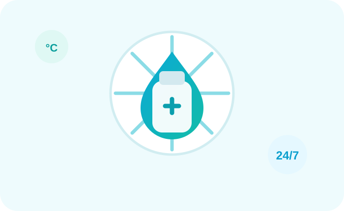
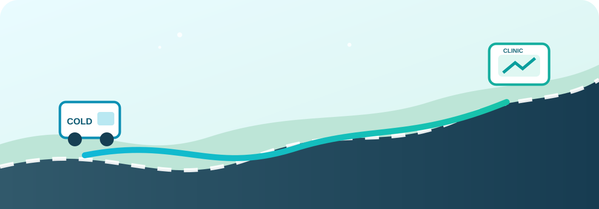
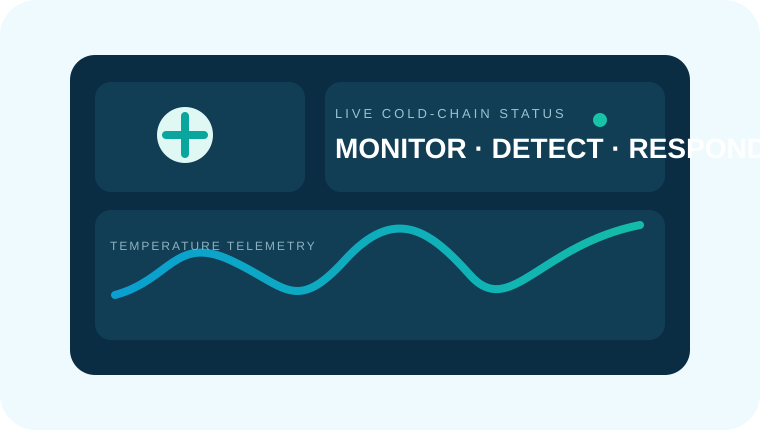
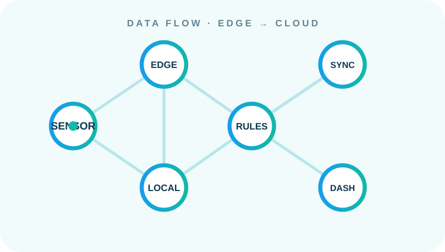
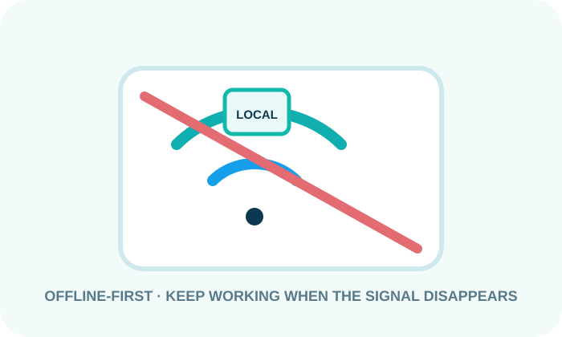
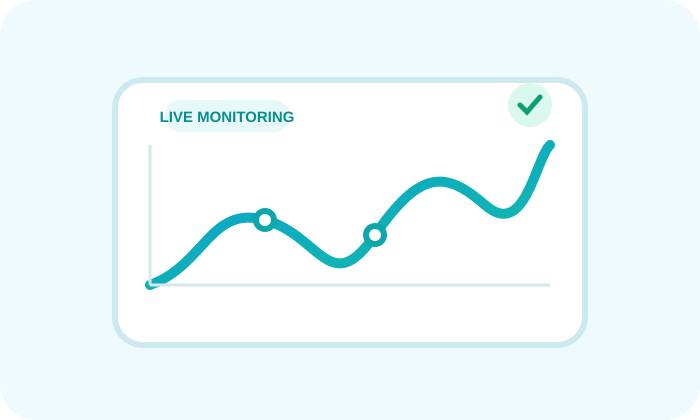
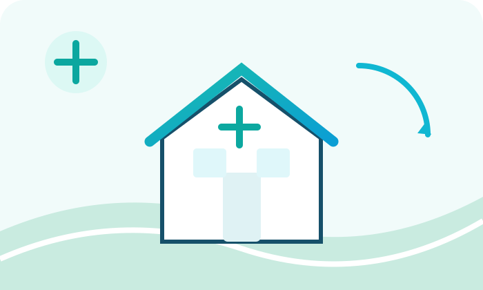

Pack
Vaccines leave a regional depot inside a controlled cold-chain journey.
VaxiFlow is an academic project focused on improving the last-mile vaccine cold chain by making temperature monitoring more visible, practical and responsive for remote and under-resourced clinics.

Vaccine distribution to remote and under-resourced clinics.
Reducing the gap between temperature events and timely action.
Designed with clinic staff and depot workflows in mind.
Instead of only describing our idea, this showcase lets you explore the logic behind it: a shipment moves, data is captured, conditions are interpreted, connectivity can disappear, and the system keeps the story intact.
Vaccines leave a regional depot inside a controlled cold-chain journey.
Road conditions, delays and distance make the last mile unpredictable.
Temperature readings become digital events rather than forgotten paper marks.
Rules and exposure history add context instead of blindly shouting “discard”.
Clinic staff receive clearer information when a shipment reaches its destination.
Vaccine delivery does not end when a shipment leaves a regional depot. The final journey to remote clinics can involve long travel times, unreliable roads, limited electricity, weak internet connectivity and manual temperature checks. VaxiFlow explores how a better monitoring workflow can help people see what is happening during this critical stage.
Some rural clinics currently rely on paper strip-chart records or manual checking. If a shipment moves outside a safe temperature range during transit, the issue may remain unnoticed until the vaccines reach the clinic. This creates a difficult situation for staff who must make decisions quickly, often without complete information.
VaxiFlow proposes exploring a monitoring approach that can work even when connectivity is unreliable. Instead of simply producing a “safe/unsafe” result, the concept considers the duration and pattern of temperature exposure so that staff can receive more meaningful information before making a decision.
The project is designed around the needs of clinic nurses, regional depot managers and public-health logistics teams. The intended benefit is a workflow that reduces unnecessary manual work, surfaces important problems earlier and supports safer vaccine handling.

The depot prepares and dispatches the vaccine shipment with relevant shipment and cold-chain information.
Temperature conditions are observed during the journey rather than relying only on a final manual check.
Potential temperature excursions can be identified and recorded so the event is not silently missed.
Clinic staff can use the available information to support an appropriate handling decision.
This mini control room makes the computer-science side visible: sensor data enters at the edge, rules evaluate the stream, local storage keeps the system useful offline, and synchronization can happen when connectivity returns.

CS principle: design for unreliable environments. Connectivity is treated as a variable, not a guarantee.

Temperature readings can move through an edge layer, local logic, and synchronization pipeline. That is the CS heartbeat of VaxiFlow.

An offline-first concept keeps essential information locally available and can synchronize later. The clinic should not become useless because the signal disappears.
Move the temperature slider. This is only a visualization for the academic concept — not a medical decision tool.
Our objectives translate the project problem into concrete areas of investigation. Each objective is intentionally connected to the real workflow of vaccine delivery, the constraints of rural clinics and the need for practical decision support.
Explore a way to make temperature conditions visible throughout the last-mile journey, rather than discovering a possible excursion only after a shipment arrives. The goal is to create a clearer record of what happened during transport and make important changes easier to notice.
Design the concept around clinics where internet access or electricity cannot always be assumed. Important monitoring and alerting functions should remain useful locally instead of depending entirely on a central system being reachable at the exact moment a problem occurs.
Avoid treating every out-of-range reading as an automatic discard event. The project will investigate how vaccine-specific tolerance windows, exposure duration and cumulative temperature history can be represented so users receive more useful context for decision-making.
Earlier visibility into shipment conditions can help teams respond before a problem becomes a late discovery. VaxiFlow aims to explore how better information could reduce unnecessary disposal while still prioritizing safe vaccine handling and appropriate professional judgment.
Create an experience that does not add another complicated process to already overloaded clinic staff. The interface and workflow should prioritize clear status information, meaningful alerts and minimal manual effort while still giving depot managers the information they need.

VISIBILITY See the journey, not just the endpoint.
REAL-WORLD CONTEXT Designed around remote clinic conditions.Every objective supports the same bigger idea: make last-mile vaccine monitoring more visible, resilient and useful for the people who actually have to operate it.
This section will become the team's academic project archive. As each deliverable is completed, the corresponding document can be attached using the button on the right.
Each stage of VaxiFlow will be documented here so the project story is easy to follow during the showcase.
Defines the project purpose, scope, stakeholders, constraints, assumptions, success criteria and overall direction.
CompletedDocuments the current cold-chain challenge, key pain points, opportunities and areas where the project can create value.
CompletedIdentifies clinic staff, depot managers and other stakeholders, including their needs, influence, responsibilities and concerns.
UpcomingDefines functional and non-functional requirements that the proposed solution should satisfy.
UpcomingExplains the proposed system components, data flow, monitoring process, storage and connectivity approach.
UpcomingShows the interface, navigation, user journeys, alerts and key interactions designed for the intended users.
UpcomingProvides evidence of the working prototype, technical implementation and core functionality explored by the team.
UpcomingRecords testing methods, results, user feedback, identified issues and improvements made to the proposed solution.
UpcomingCollects the final academic report, presentation materials, conclusions and evidence of the completed project.
UpcomingVaxiFlow is being developed collaboratively by a six-member student team, with the website serving as a central showcase for our work and progress.
Student ID · 6936260
Student ID · 6938941
Student ID · 6936302
Student ID · 6937055
Student ID · 6936303
Student ID · 6937053
For project-related questions, academic collaboration or feedback, please use the contact details below.
Last-mile vaccine cold-chain monitoring · SDG 3 · Academic project showcase